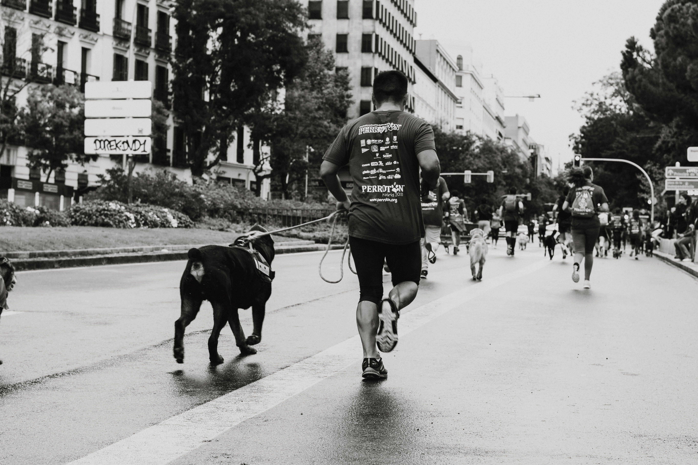
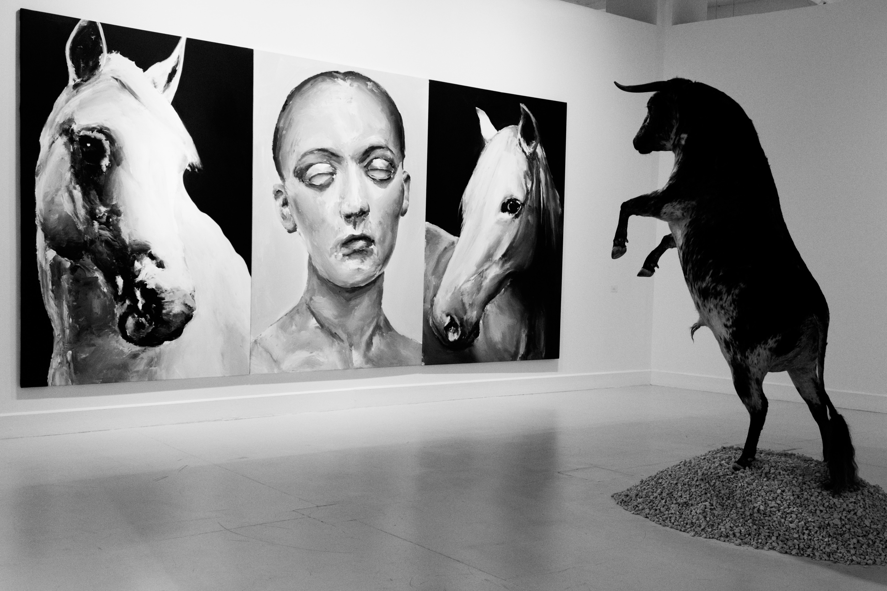

El mundo desde mi ventana



Esta iniciativa se genera mediante la
restricción social a nivel mundial.
Nuestro proposito es que las personas
generen recuerdos mediantes las fotografias
,aquellas deben ser blanco y negro.Su
objetivo de las imagenes es la captura de
un aspecto reflexivo en relacion con la
situación que se afronta actualmente.

Ingrese foto
Unete a nuestras redes sociales